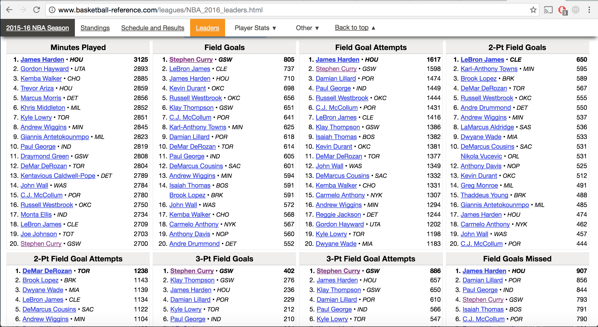
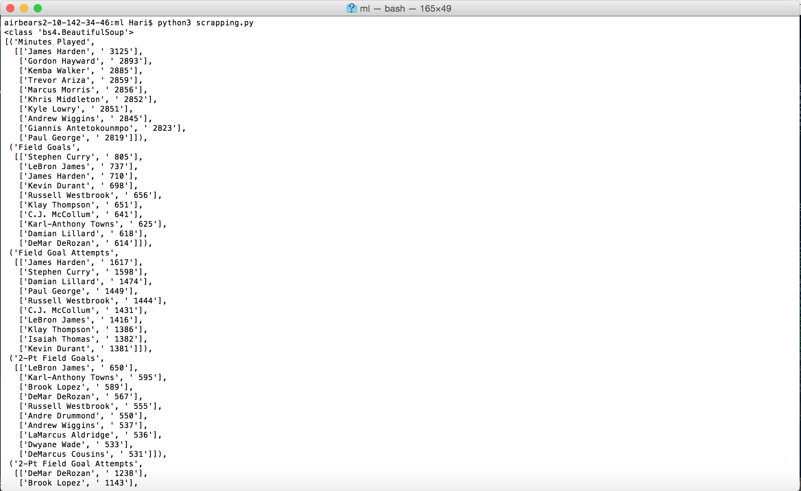

Wow, it’s been a very long time since I wrote on this blog. In fact, it’s been so long that I even forgot that it existed and I only remembered because my roommate asked me about it. Oh yea, I’m in college and I have a roommate (two in fact) now. Anyways, this post will be a little different than the others. I recently started to pursue an interest of my own outside the classroom, and I decided to document my progress here on this blog. It hopefully will be a nice way to record my process while also keeping me accountable and prevent me from slacking off. Plus it’s kinda cool to write this shit down haha.
OK, so let’s talk about the project. For those of you who know me, I am a huge sports fan. Like HUGE fan. NFL, NBA, tennis, MLB, futbol, ice hockey, MMA, cricket, you name it, I have probably followed it. My two favorite leagues to follow are the NFL and NBA, with my favorite teams being the Patriots and the Warriors respectively (I am NOT a bandwagoner fight me if you think I am haha). I probably sound like a huge sports geek right now, but hear me out.
Recently in my CS61A class, we completed a project called Maps, where we basically created the predicting algorithm that Yelp uses to recommend restaurants to its users. This “predictor” as I will call it uses something called a k-means algorithm and linear regression, both of which are machine learning techniques. Although we didn’t actually do any machine learning, I found the process really interesting, and I decided to do some exploring on my own. If you want to learn more about the k-means algorithm, check it out here:
The end goal of this project is to take some sort of NBA statistic and run machine learning algorithms on these statistics to learn something interesting. Now what statistics and what algorithms am I going to use? I’m actually not sure, and I’m not at the level right now to start thinking about that. But in order to get there, I’ll be doing analyses on smaller, known data sets, which I’ll be documenting here.
The first step into doing this is to build a viable web scraper in order to take data from the heaven known as basketball-reference.com. So that was my goal for the last couple days: take some data and organize it in a reasonable manner to use in analysis later on.
After googling web scraping techniques and libraries, I found something called BeautifulSoup, a Python library created at MIT. This library makes web scraping a lot more convenient by putting all the data into what’s called a “soup” and then running functions on it to get resultant sets of web data that we can further narrow down. So I took this page:
I wanted to grab each of the top 10 lists of all 50 statistics. Here is my code below:
1 2 3 4 5 6 7 8 9 10 11 12 13 14 15 16 17 18 19 20 21 22 23 24 25 26 27 28 29 30 31 32 33 34 35 36 37 38 39 40 41 42 43 44 45 46 | """ ------------------------------------------------FIRST PYTHON WEB SCRAPER------------------------------------------------ I am taking data from the statistical leaders of the 2015-2016 NBA season from basketball-reference and inputting them into a Python dictionary. The structure of the data is as follows: LIST TUPLE[0]: Name of Statistic TUPLE[1]: LIST 0. LIST ([0]- Name of Player, [1]- Value) #1 Player | | 9. LIST ([0]- Name of Player, [1]- Value) #10 Player """ import urllib.request as url import pprint from bs4 import BeautifulSoup """ Libraries used: urllib.request - accessing website data BeautifulSoup - manipulate the web data PPrint - Printing dictionaries/lists in a nice format """ wiki2 = "http://www.basketball-reference.com/leagues/NBA_2016_leaders.html" #Accessing web page and converting to BS page2 = url.urlopen(wiki2) soup2 = BeautifulSoup(page2, "lxml") print(type(soup2)) #Check that BS is working (converting to correct object type) col = soup2.find_all(class_="columns") #Create list of Stat Columns each_col = [element for element in col] #Creating lists for length purposes leaders = [] #Creating empty list for j in range(len(each_col)): cat_leaders = [] #Resetting each Top 10 list for every new Stat rows = col[j].find_all("tr") #Creating list of each player in the Top 10 name = col[j].find_all("caption")[0].get_text() #Finding the name of each stat (KEY OF EACH DICTIONARY) minutes = [element for element in rows] for i in range(len(minutes)//2): cat_leaders.append([rows[i].find_all(class_="who")[0].find_all("a")[0].get_text(), rows[i].find_all(class_="value")[0].get_text()]) #Append list of (name, value) for each player leaders.append((name, cat_leaders)) #Create tuple for list entry pprint.pprint(leaders) #Print dictionary |
Since the code is pretty heavily commented, I’ll just explain the logic behind the whole process. I first grabbed all the columns on the web page, where each column holds a top 10 list. The find_all function creates a list of Resultant Sets, so I have a set of 50 ResultantSet objects in the variable col. Next I create a list of tuples(immutable lists) called leaders. Tuple[0] will be the name of the Statistic, and Tuple[1] will be a list containing the top 10 players of that statistic.
In the outer loop, I also set the list of rows in the col to rows. I also find the name of the statistic, which will become Tuple[0]. In the inner loop, I basically create a list that looks like [“player name”, Stat Value] for each player 1-10. This list that contains the 10 pairs is called cat_leaders and is reset every time I go to a new column/statistic.
Finally, I append each name and list of lists into the tuple. This is what the final product looks like:
I also experimented with using a dictionary instead of a list, where the key would be the name of the statistic and the value would be the list. However, I realized that accessing the values(players) directly would violate the dictionary abstraction. (Dictionaries are meant to be accessed only by the keys but I wanted direct access to the values themselves)
So now that I have this data in accessible form, what is the next step? I plan on finding how often players appear on this graph and plot that on some sort of graph. If that doesn’t work, I’ll figure something else out haha. Anyways thanks for reading if you made it to the end of this, and hope you liked the material
Quote of the Day:
I'd like to say to all my fans out there, thanks for the support. And to all my doubters, thanks very much because you have also pushed me -Usain Bolt